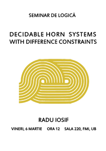
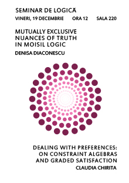
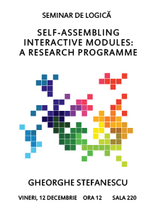
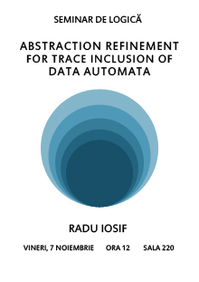
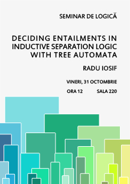

Talks in 2014-2015
Friday, June 19, 2015
Adriana Bălan (Polytehnica University of Bucharest)
Coalgebraic logic over (po)sets
Abstract: Positive modal logic, as introduced by Dunn in the 90s, is the negation-free fragment of the basic modal logic K.
Replacing the models (Kripke frames) by coalgebras for an arbitrary (weak-pullback preserving) functor on the category of sets yields
the positive fragment of coalgebraic logic, as developed in joint work with A. Kurz and J. Velebil.
Reference:
A. Bălan, A. Kurz, J. Velebil, Positive fragments of coalgebraic logics, to appear in Log. Meth. Comput. Sci. CALCO2013 Special Issue,
arXiv:1402.5922 [math.CT].
Friday, June 12, 2015
Andrei Sipoș (IMAR & FMI)
Ultraproducts and metastability II
Friday, June 5, 2015
Andrei Sipoș (IMAR & FMI)
Ultraproducts and metastability I
Abstract: We formulate the problem of finding uniform rates of metastability and we illustrate how J. Avigad and
J. Iovino showed that ultraproducts of metric spaces can provide us non-constructive existence proofs. We illustrate the method with several applications.
Reference:
J. Avigad, J. Iovino, Ultraproducts and metastability,
New York Journal of Mathematics 19 (2013), 713-727.
Friday, May 29, 2015
Andrei Sipoș (IMAR & FMI)
Ellerman's generalized ultraproducts II
Friday, May 22, 2015
10:00 in Hall 202
Matei Popovici
(University Politehnica of Bucharest)
Truely perfect recall and commitment in Alternating-Time Temporal Logics
Abstract: Multiagent systems are a paradigm for modeling interactions between
heterogeneous software components or between software and humans. Verifying properties of
such interactions is critical for deploying systems which rely on them. Alternating-Time
Temporal Logic (short ATL) offers a promising solution. ATL extends Temporal Logics with a
coalition modal operator < A > f, which expresses that coalition A has a strategy to enforce f.
ATL also comes with tussle: selecting the "right" semantics. Several options are possible,
by making different assumptions on the abilities of agents: perfect/imperfect memory (or recall)
and perfect/imperfect information. However, there are situations when these semantics are
problematic: we show that agents with perfect recall & imperfect information may still forget
when proceeding to satisfy a sub-goal. Also, they may relent their strategies, in a similar
situations.
We propose an ATL-semantics which addresses the "forgetting" and "commitment" issues. We study
the expressive power, validities and model-checking, for our proposed semantics.
Friday, May 15, 2015
Andrei Sipoș (IMAR & FMI)
Ellerman's generalized ultraproducts I
Abstract: We show how Ellerman's work can streamline some classical results involving Kripke structures and/or ultraproducts by using sheaf-based first-order model theory.
Reference:
D. P. Ellerman, Sheaves of structures and generalized ultraproducts,
Annals of Mathematical Logic 7 (1974), 163-195.
Friday, April 24, 2015
Mihai Prunescu (IMAR)
A group of Thompson and one of its effects in model theory
Abstract: We introduce Thompson's group V and we construct a formal statement true in all finite groups but not in all groups.
Friday, April 17, 2015
Andrei Sipoș (IMAR & FMI)
Forcing in Model Theory II
Abstract: We show how finite forcing in conjunction with infinitary logic can be used to derive omitting types results. Then we develop the parallel theory of infinite forcing, emphasizing the differences in the classes of structures created.
Friday, April 3, 2015
Andrei Sipoș (IMAR & FMI)
Forcing in Model Theory I: Finite Forcing
Abstract: We illustrate Robinson's almost direct translation into model theory of
Cohen's forcing method from set theory and how it can be used in conjunction with well-behaved
fragments of infinitary logic to yield an almost purely syntactical theory of types and
their realization and omitting and to determine the widest available generalizations of
model completion and existential completion, concepts which in addition serve as a strong motivation for developing the forcing terminology.
Friday, March 27, 2015
Alexandru Dragomir (University of Bucharest)
Edgington's Verificationist Thesis and Fitch's Paradox in an Epistemic-Temporal Framework
Abstract: (1) I will begin by offering a short introduction to Epistemic Logic and presenting the Verificationist Thesis and
Fitch's paradox in an epistemic-modal logic. Then, I will proceed to presenting three Epistemic
Temporal logical frameworks created by Hoshi (2009): TPAL (Temporal Public Announcement Logic),
TAPAL (Temporal Arbitrary Public Announcement Logic) and TPAL+P! (Temporal Public Announcement Logic with Past Operators).
(2) Edgington (1985) offered an interpretation of the Verificationist Thesis that blocks Fitch's paradox and
I will propose a way to formulate it in a TAPAL-based language. The language I will use is a combination of TAPAL and
TPAL+P! with an Indefinite Past Operator (TAPAL+P!+P). Using indexed satisfiability relations
(as introduced in (Wang 2010; 2011)) I will offer a prospective semantics for this language.
I will investigate whether the tentative reformulation of Edgington's Verificationist Thesis in TAPAL+P!+P is free from paradox and adequate to
Edgington's ideas on how the Verificationist Thesis should be interpreted.
Reference:
D. Edgington, The Paradox of Knowability, Mind 94 (1985), 557-568.
T. Hoshi, Epistemic
dynamics and protocol information, PhD Thesis, Stanford University, ILLC Dissertation Series DS-200X-NN, 2009.
Y. Wang, Epistemic
Modelling and Protocol Dynamics, PhD Thesis, University of Amsterdam, ILLC Dissertation Series DS-2010-06, 2010.
Y. Wang, Reasoning about protocol change and knowledge, in ICLA'11 Proceedings of the 4th Indian conference on Logic
and its applications, 2011, Springer, 189-203.
Friday, March 20, 2015
Gabriel Istrate (West University of Timisoara and the e-Austria
Research Institute)
Partition into heapable sequences, heap tableaux and a multiset
extension of Hammersley's process
Abstract: We investigate partitioning of integer sequences into heapable
subsequences (previously defined and established by Mitzenmacher et
al.). We show that an extension of patience sorting computes the
decomposition into a minimal number of heapable subsequences (MHS). We
connect this parameter to an interactive particle system, a multiset
extension of Hammersley's process, and investigate its expected value
on a random permutation. In contrast with the (well studied) case of
the longest increasing subsequence, we bring experimental evidence
(with some
theoretical justifications as well) that the correct asymptotic
scaling is $(1+\sqrt{5})/2\cdot \ln(n)$. Finally we give a heap-based
extension of Young tableaux, prove a hook inequality and an extension
of the Robinson-Schensted correspondence to such heap tableaux.
Reference:
Gabriel Istrate, Cosmin Bonchiș, Partition into heapable sequences, heap tableaux
and a multiset extension of Hammersley's process, 2015.
Friday, March 6, 2015
Radu Iosif (CNRS - VERIMAG, France)
Decidable Horn Systems with Difference Constraints
Abstract: This paper tackles the problem of the existence of solutions for
recursive systems of Horn clauses with second-order variables
interpreted as sets of integers, and harnessed by a simple first-order
theory of integers, such as difference bounds arithmetic. We start by
the definition of a simple class of Horn systems with one second-order
variable and one recursive rule, for which we prove the decidability
of the problem "does the system has a solution ?". The proof relies on
a construction of a tree automaton recognizing all cycles in the
weighted graph corresponding to every unfolding tree of the Horn
system. We constrain the tree to recognize only cycles of negative
weight by adding a Presburger formula that harnesses the number of
times each rule is fired, and reduce our problem to the universality
of a Presburger-constrained tree automaton. We studied the complexity
of this problem and found it to be in 2EXPTIME with a EXPTIME-hard
lower bound. In the second part, we drop the univariate restriction
and consider multivariate second-order Horn systems with a structural
restriction, called flatness. Finally, we show the decidability of
this class of systems, within the same complexity bounds.
Reference:
Radu Iosif,
Decidable Horn Systems with Difference Constraints, arXiv:1503.00258 [cs.FL], 2015.

Friday, February 27, 2015
Andrei Sipoș (IMAR & FMI)
Proving Morley's Theorem III
Abstract: I will wrap up Morley's proof and then move on to the Baldwin-Lachlan characterization of uncountably categorical theories in terms of Vaughtian pairs.
Friday, February 20, 2015
Andrei Sipoș (IMAR & FMI)
Proving Morley's Theorem II
Abstract: This part will finish the exposition of Morley's
original proof, focusing on tools such as indiscernibles, saturation or
relatively prime models.

Friday, February 13, 2015
Andrei Sipoș (IMAR & FMI)
Proving Morley's Theorem I
Abstract: By proving the old conjecture of Łoś stating that a theory having exactly
one model in one uncountable cardinality has this property in every uncountable cardinality,
Morley inaugurated a new phase of model theory research.
We shall explore his methods, along with several alternative proofs and extensions to other
logics, if time permits.

Friday, December 19, 2014
Claudia Chiriță (Royal Holloway, University of London)
Dealing with preferences: on constraint algebras and graded satisfaction
Abstract: We describe a general technique for enriching algebraic
specifications with soft constraints meant to enable the formal
description of preferences, magnitude of satisfaction and best solution
(with respect to a set of preferences).
This allows us to quantify the compatibility of two specifications, and
thus provides a possible procedure
for the selection of the most promising provider of a given resource in
the context of service discovery and binding.
The construction that we propose relies on the approach to soft
constraints specific to
valued constraint satisfaction problems (VCSP) and on the
institution-independent theory
of algebraic specifications.
and
Denisa Diaconescu (FMI and University of Bern)
Mutually exclusive nuances of truth in Moisil logic
Abstract: Nuances of truth provide an alternative and robust way to reason about
vague information: a many-valued object is determined by some Boolean objects,
its nuances. However, a many-valued object cannot be recovered only from its Boolean nuances.
This idea is mathematically expressed by a categorical adjunction between Boolean algebras
and Lukasiewicz-Moisil algebras.
Moisil's determination principle plays a central role in the study of Lukasiewicz-Moisil
algebras and Moisil logic. Since in the original approach, the determination principle
fails for subalgebras, we explore a more expressible notion of nuances, namely mutually
exclusive nuances of truth, which among others, save the determination principle for subalgebras.

Friday, December 12, 2014
Gheorghe Stefanescu (FMI)
Self-assembling interactive modules: a research programme
Abstract: We propose a research programme for getting structural
characterisations for 2-dimensional languages
generated by self-assembling tiles. This is part of a larger programme
on getting a formal foundation of parallel, interactive, distributed
systems.
Reference:
Gheorghe Stefanescu, Self-assembling interactive modules: a research programme, 2014.

Friday, December 5, 2014
Radu Iosif (CNRS - VERIMAG, France)
Abstraction Refinement for Trace Inclusion of Data Automata
Abstract: A data automaton is a finite automaton equipped with variables (counters)
ranging over a multi-sorted data domain. The transitions of the automaton are controlled
by first-order formulae, encoding guards and updates. We observe, in addition to the
finite alphabet of actions, the values taken by the counters along a run of the automaton,
and consider the data languages recognized by these automata.
The problem addressed in this paper is the inclusion between the data languages recognized
by such automata. Since the problem is undecidable, we give an abstraction-refinement
semi-algorithm, proved to be sound and complete, but whose termination is not guaranteed.
The novel feature of our technique is checking for inclusion, without attempting to
complement one of the automata, i.e. working in the spirit of antichain-based non-deterministic
inclusion checking for finite automata. The method described here has various applications,
ranging from logics of unbounded data structures, such as arrays or heaps, to the verification
of real-time systems.
Reference:
Radu Iosif, Adam Rogalewicz, Tomas Vojnar,
Abstraction Refinement for Trace Inclusion of Data Automata, arXiv:1410.5056 [cs.LO].

Friday, November 28, 2014
Andrei Sipoș (IMAR & FMI)
Categorial Interpretations III
Friday, November 21, 2014
Andrei Sipoș (IMAR & FMI)
Categorial Interpretations II
Abstract: We move forwards to the intepretation of logic in categories.
Friday, November 14, 2014
Andrei Sipoș (IMAR & FMI)
Categorial Interpretations I
Abstract: The classical theory of models corresponding to
(fragments of) first-order logic can be generalized in order to show
deeper connections between different theories. As a prerequisite, we
first depict the suitable categories which, in the process, replace the
ordinary category of sets, namely various flavours of toposes.
Friday, October 31, 2014
Radu Iosif (CNRS - VERIMAG, France)
Deciding Entailments in Inductive Separation Logic with Tree Automata
Abstract: Separation Logic (SL) with inductive definitions is a natural
formalism for specifying complex recursive data structures, used in
compositional verification of programs manipulating such structures.
The key ingredient of any automated verification procedure based on SL
is the decidability of the entailment problem. In this work, we reduce
the entailment problem for a non-trivial subset of SL describing trees
(and beyond) to the language inclusion of tree automata (TA). Our
reduction provides tight complexity bounds for the problem and shows
that entailment in our fragment is EXPTIME-complete. For practical
purposes, we leverage from recent advances in automata theory, such as
inclusion checking for non-deterministic TA avoiding explicit
determinization. We implemented our method and present promising
preliminary experimental results.
Reference:
Radu Iosif, Adam Rogalewicz, Tomas Vojnar, Deciding Entailments in Inductive Separation Logic with Tree Automata, arXiv:1402.2127 [cs.LO].



{kind=link}
{kind=link}
{kind=link}
{kind=link}
{kind=link}